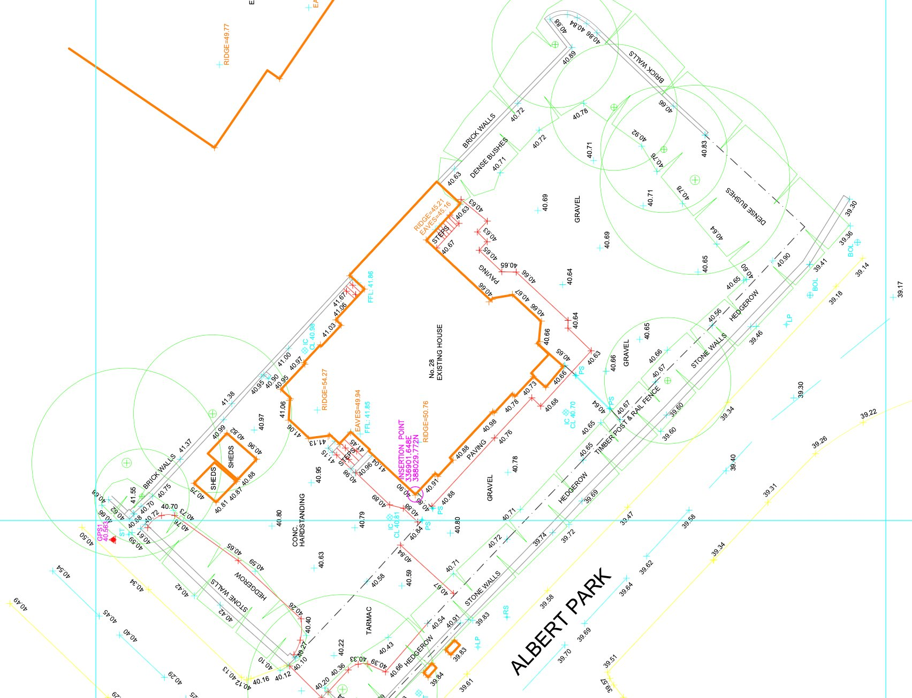

Accurate land survey data for planning applications and development projects across Liverpool and Merseyside, delivered fast.
Get a QuoteLiverpool's waterfront geography and the topographic complexity of areas like Everton, Kensington and Wavertree means that topographical surveys are frequently required ahead of planning submissions across Merseyside. Liverpool City Council expects survey data to accompany applications for new development, boundary works and drainage-sensitive schemes. 105 Surveys delivers topographical surveys across Liverpool, Wirral, Knowsley, Sefton, St Helens, Halton and the wider Merseyside area, with data and drawings delivered fast to keep your application and development programme on track.
Every topographical survey we deliver in Liverpool meets the data standards expected by Liverpool City Council and is formatted for direct use in planning submissions and design work.
Survey data delivered quickly after site visit, keeping your Liverpool planning application or development programme on schedule.
We cover Liverpool and all of Merseyside, with no call-out restrictions across the North West. One call gets your survey booked.

A topographical survey is a detailed measurement of the ground surface — recording existing levels, features, boundaries, services, vegetation and all above-ground structures on and around a site. Planning authorities across Merseyside require this data to understand the existing site conditions before considering any new development proposal.
Liverpool City Council, Sefton Council and Knowsley Council all require topographical survey data with planning applications for new-build and external development schemes. We ensure every topographical survey delivered in Liverpool is accurate, correctly formatted and ready to submit with your planning application without amendment.
Topographical survey data is the base on which every new-build and site development design in Liverpool is built. Without accurate levels and feature data, your design is built on assumptions that will surface as problems during planning or on site.
Liverpool City Council, Sefton Council and Knowsley Council all require topographical survey data with planning applications for new-build and external development schemes. We work directly with planning consultants across Merseyside to ensure survey data is submitted in the right format, to the right specification, first time.
For residential development sites in Sefton and Knowsley, commercial land assessments, waterfront regeneration schemes and pre-application due diligence across Merseyside across Merseyside, accurate topographical survey data at the front end reduces risk, supports accurate design and prevents costly redesign when issues emerge later in the programme.
Liverpool's topography is shaped by its position on the eastern bank of the Mersey estuary. The city slopes from the ridge along the Edge Lane corridor down to the waterfront, creating significant level change across many development sites. For planning applications, this level data is critical — it determines drainage strategy, floor levels, retaining wall requirements and flood risk status. A topographical survey is the first piece of data that unlocks the design process on any Liverpool development site.
The Baltic Triangle, Vauxhall, Everton and north Liverpool are among the most active development zones at present, with brownfield regeneration projects, new build residential schemes and infrastructure works all requiring topographical surveys as a pre-application requirement. Liverpool City Council validates planning applications with a requirement for topographical survey data where the site involves new development, external works or significant ground remodelling.
The Mersey waterfront presents specific survey considerations: tidal influence on ground levels, designated flood risk zones, and development within the buffer zones of the former UNESCO World Heritage Site area. For sites along the waterfront and dock estate, topographical surveys must capture not just ground levels but wharf edges, dock infrastructure and tidal datum references that are relevant to the drainage and flood risk strategy.
We cover Liverpool city centre, Birkenhead, Bootle, Southport, Huyton, St Helens, Crosby, Formby, Wirral, Knowsley and the wider Merseyside area for topographical surveys. We are based in Liverpool and can attend site faster here than anywhere else. Call 0151 272 3479 to confirm availability and get a fixed price.
We cover Liverpool and surrounding areas including Birkenhead, Bootle, Wirral, Southport and St Helens, and more across Merseyside. We also deliver topographical surveys across the wider North West. Call 0151 272 3479 or email info@105surveys.com to see how we can help with your project.